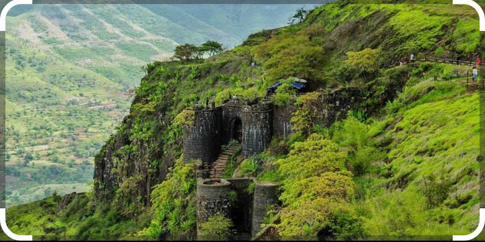

Sinhagad Fort is also known as Kondana.Sinhagad Fort is a Hill Fort.Height of Sinhagad is 1,317 metres (4,321 ft).Previously known as Kondana, the fort had been the site of many battles,most notably the Battle of Kondana in 1670.It is located in the Pune district in Maharashtra. Perched on an isolated cliff of the Bhuleswar range in the Sahyadri Mountains, the fort is situated on a hill about 760 metres (2,490 ft) above ground and 1,317 metres (4,321 ft) above mean sea level.The Sinhagad Fort was initially known as "Kondhana" after the sage Kaundinya. The Kaundinyeshwar temple coupled with the caves and carvings indicates that the fort had probably been built around two thousand years ago.
The fort is also on the famous fort in Maharashtra which has a great history of Tanaji Malusare. The fort was captured by Tanaji Malusare and his brother. Sinhagad (Lion's Fort) fort was strategically built to provide natural protection from the enemies due to its very steep slopes. The walls of the forts and bastions were constructed only at key places. There are two gates to enter the fort named Kalyan Darwaja and Pune Darwaza. The Kalyan Darwaja is towards the southeast while the Pune Darwaza is towards north east.The fort is surrounded by several other forts,and was known as the control center of the Maratha Empire.In clear weather, Rajgad, Purandar and Torna forts can be seen from the Sinhagad killa.
In 1670, Chhatrapati Shivaji Maharaj reconquered the fort for the third time through his Koli Subedar,Tanaji Malusare in Battle of Sinhagad, and the fort came and stayed under the Maratha rule till 1689 A steep cliff leading to the fort was scaled in the dead of the night with the help of a tamed monitor lizard named "Yashwanti", colloquially known as a Ghorpad. Thereafter, A fierce battle ensued between Tanaji and his men versus the Mughal army headed by Udaybhan Singh Rathod, a Rajput Sardar who had control of the fort.
Tanaji Malusare lost his life, but his brother Suryaji took over and captured the Kondana fort, now known as Sinhagad.
There is an anecdote that upon hearing of Tanaji's death, Shivaji Maharaj expressed his remorse with the words,
"Gad ala, pan Sinha gela"
-"The Fort is conquered, but the Lion was lost."According to some, the name Sinhagad predates this event. A bust of Tanaji Malusare was established on the fort in memory of his contribution to the battle.